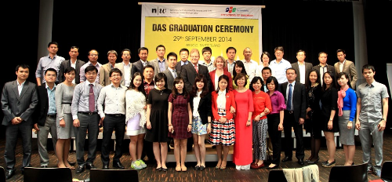

Tuyển sinh:
Chương trình sau Đại học
Khối Giáo dục FPT có hai đơn vị phụ trách mảng đào tạo hệ sau đại học với ba chương trình:
Chương trình đào tạo Thạc sỹ chuyên ngành Kỹ thuật phần mềm (MSE)
Do Viện Nghiên cứu Công nghệ FPT trực tiếp phụ trách, chương trình đào tạo Thạc sỹ MSE là sản phẩm đúc kết từ 18 năm
kinh nghiệm xuất khẩu phần mềm của công ty phần mềm lớn nhất Việt Nam – FPT Software. Đội ngũ giảng viên của chương
trình là các chuyên gia CNTT vừa có chuyên môn giảng dạy tốt, vừa có nhiều kinh nghiệm làm việc thực tế trong ngành công
nghiệp phần mềm.
Đối tượng: Những người mang quốc tịch Việt Nam và người nước ngoài học tập và làm việc trong lĩnh vực công nghệ phần mềm
mong muốn có cơ hội trở thành Nhà quản trị dự án phần mềm chuyên nghiệp hoặc Chuyên gia khai thác dữ liệu.
Yêu cầu đầu vào:
Có bằng cử nhân ngành KTPM hoặc ngành gần với KTPM (Khoa học máy tính, Điện tử viễn thông, Truyền thông và mạng máy
tính, Hệ thống thông tin và Công nghệ thông tin).
Cử nhân các ngành khác cần học bổ sung môn Nhập môn KTPM trong chương trình KTPM bậc đại học của Đại học FPT.
Trình độ Tiếng Anh đầu vào đáp ứng một trong các điều kiện CEFR B1, IELTS 4.5, TOEFL 450 ITP, IBT 45. Người có quốc tịch
nước ngoài đến từ các nước nói tiếng Anh không phải nộp chứng chỉ này.
Môn thi đầu vào:
Môn cơ bản: Toán và cơ sở máy tính
Môn chuyên ngành (kỹ thuật phần mềm)
Thời gian học: Học tập trung vào Thứ Bảy và Chủ nhật.
Chương trình đào tạo Thạc sĩ chuyên ngành Quản trị Kinh doanh (FeMBA)
FeMBA là chương trình đào tạo thạc sỹ quản trị kinh doanh do Viện Quản trị Kinh doanh FSB – Đại học FPT nghiên cứu,
triển khai đào tạo và cấp bằng.
Đối tượng tuyển sinh:
Nhà quản lý đang giữ trọng trách đứng đầu các bộ phận tác nghiệp của doanh nghiệp
Giám đốc chức năng, trưởng phó phòng ban bộ phận
Lãnh đạo doanh nghiệp vừa và nhỏ
Ứng viên tiềm năng cho vị trí trở thành những nhà quản trị
Môn thi đầu vào:
GMAT
Quản trị học
Tiếng Anh
Chương trình đào tạo sau Đại học DAS (Diploma of Advanced Studies)
Do Viện Quản trị Kinh doanh FSB – Đại học FPT trực tiếp phụ trách, Chương trình DAS/EMBA hướng tới tấm bằng Thạc sĩ Quản
trị Kinh doanh MBA của trường Đại học NorthWestern – Trường đại học hàng đầu Thụy Sỹ.

Học viên DAS khóa 30-31 sang châu Âu học tiếp để lấy bằng MBA của trường hàng đầu Thụy Sĩ.
Đặc biệt, chứng nhận DAS được công nhận bởi trường Đại học Khoa học ứng dụng Northwestern Thụy Sỹ để đào tạo tiếp lên
MBA. Giai đoạn 2 này sẽ được đào tạo tại Thụy Sỹ hoặc một quốc gia khác cũng có hoạt động liên kết đào tạo với Đại học
Northwestern như Thái Lan, Singapore…
Đối tượng: Lãnh đạo doanh nghiệp, các cá nhân có triển vọng trở thành quản lý cấp cao hoặc thực sự muốn làm chủ doanh
nghiệp của mình
Thời gian đào tạo: 1,5-2 năm, tùy theo hình thức đào tạo tập trung hay không tập trung.